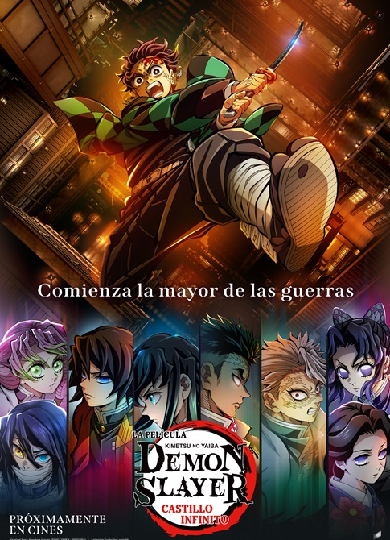
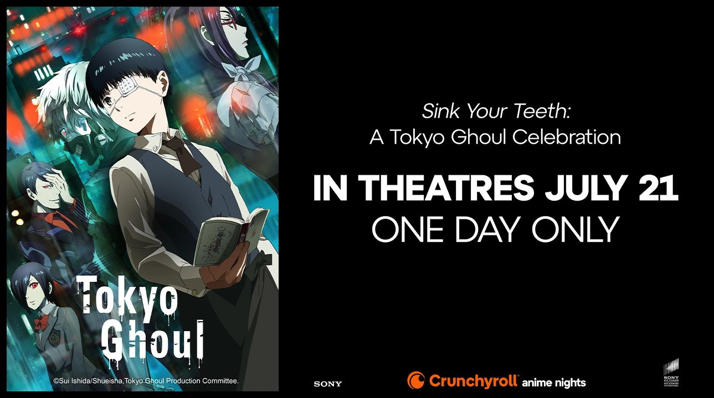

PREVENTA Para la peliucula: Kimetsu no yaiba: Mugen-jō-hen.

La aclamada preventa para la proxima gran pelicula animada de la casa de UFOTABLE será esta noche sobre las 11 en cine Colombia.

La aclamada preventa para la proxima gran pelicula animada de la casa de UFOTABLE será esta noche sobre las 11 en cine Colombia.

Crunchyroll y Sony celebran el legado de Ken Kaneki con una función exclusiva que recopila lo mejor de la primera temporada.